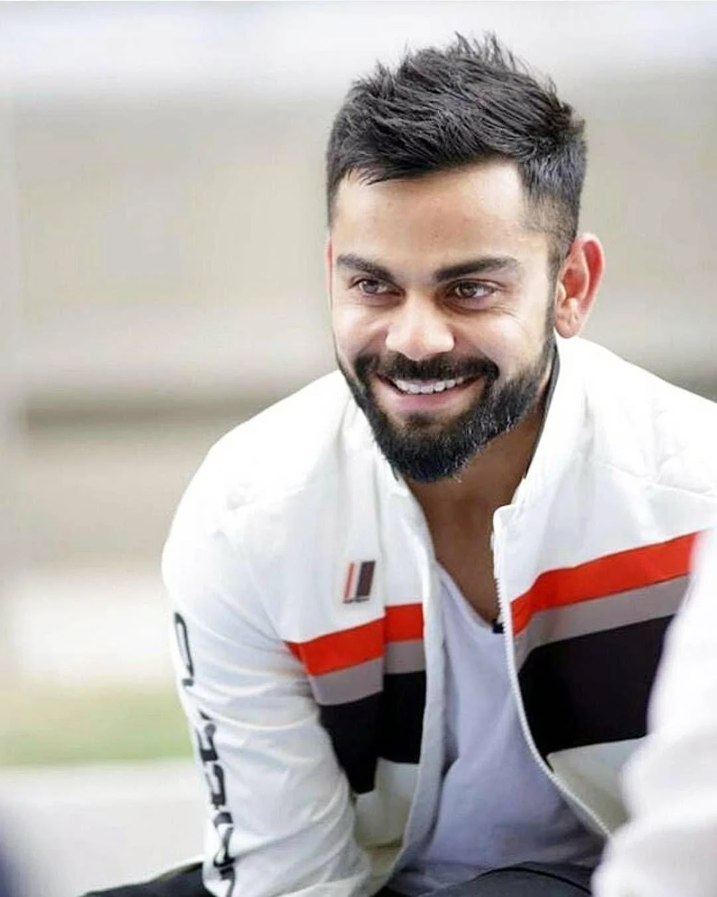

personal information
-
NAME:PAWAN KALYAN
- AGE:52
- DESIGNATION:DEPUTY CM

hover here to view more information
Pawan Kalyan is a prominent Indian actor, politician, and film producer, best known for his work in the Telugu film industry. He was born on September 2, 1971, in Bapatla, Andhra Pradesh, India. Pawan Kalyan is often regarded as one of the most influential and charismatic actors in Telugu cinema, and his fan following is immense, especially in the Telugu-speaking states of Andhra Pradesh and Telangana.
personal information
- NAME:VIRAT KOHLI
- AGE:36
- DESIGNATION:KING OF CRICKET
">
hover here for more information
Virat Kohli is one of the most celebrated cricketers in the world and one of the most successful Indian captains in cricket history. Known for his aggressive batting style, leadership qualities, and determination, Kohli has set numerous records and is considered one of the greatest batsmen in the history of the game.